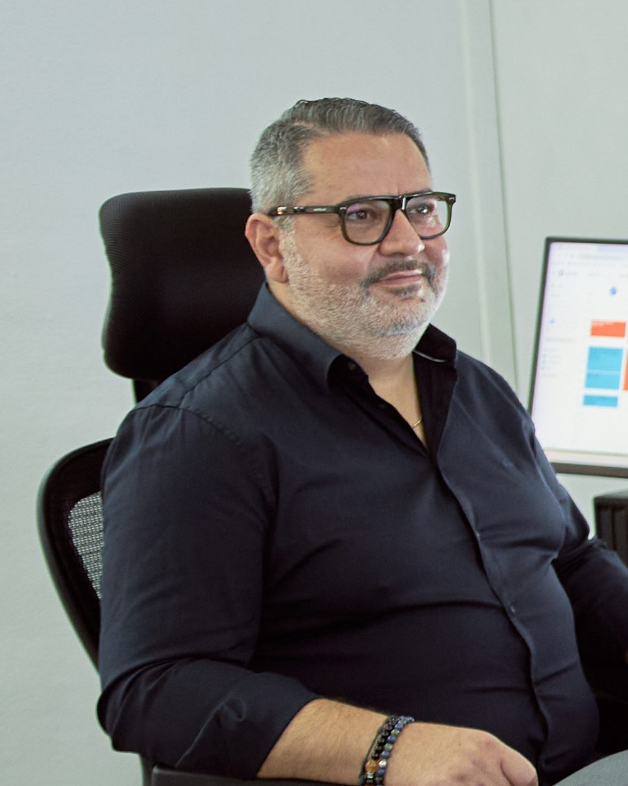
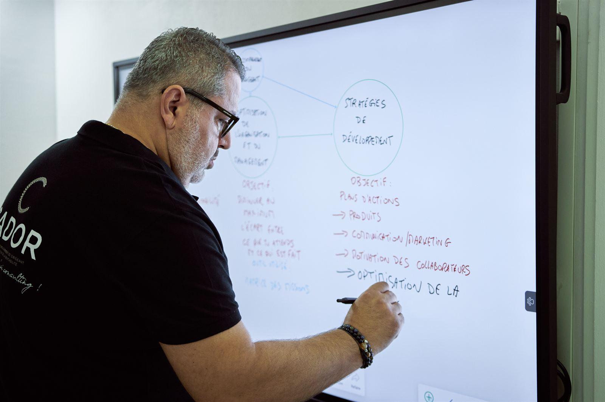

Ghassan Rizk, consultant en entreprise en Guadeloupe
Trente ans en entreprise, de la caisse à la direction commerciale et marketing. Depuis 2022, je mets cette expérience au service des dirigeants de TPE et PME de Guadeloupe, avec CADOR CONSULTING.
- MARIMAX
- Autoguadeloupe, quatorze ans
- CADOR CONSULTING depuis 2022

Le terrain d'abord
J'ai grandi à Pointe-à-Pitre. Dès treize ans, mes vacances se passaient dans l'entreprise familiale : à la caisse, à la comptabilité, au magasin, au volant pour les livraisons. Les comptes de résultat, je les faisais à la main, sur une feuille, en trois couleurs.
Chez MARIMAX, j'ai vu l'entreprise démarrer. J'allais chercher les statistiques à la douane pour calculer notre part de marché. J'en suis devenu le directeur d'exploitation, à la demande de ceux qui avaient été mes collègues.
Quatorze ans chez Autoguadeloupe
D'abord chef des ventes des pièces de rechange, puis directeur commercial et marketing, de 2011 à 2022. Là-bas, les chiffres tombaient tous les matins. Vous êtes fier de vos vingt voitures ; le concurrent en a fait quarante.
Chaque mois, le point des chiffres. Le premier mois, on raconte une histoire. Le deuxième, on enjolive. Le troisième, si la tendance est là, on vous demande ce qui se passe. C'est le meilleur management que j'aie connu. J'y ai appris qu'un chiffre n'est pas un contrôle : c'est une aide.
CADOR, lettre par lettre
En 2022, j'ai créé CADOR CONSULTING pour transmettre ce que le terrain m'a appris. Le nom se lit lettre par lettre : Consulting en Accompagnement de Dirigeant pour l'Optimisation de la Rentabilité. Et un cador, c'est quelqu'un qui connaît son affaire : avec un nom pareil, il faut assurer derrière.
Depuis, une cinquantaine d'entreprises accompagnées, en commerce, en production, en services et dans l'artisanat. Je suis aussi cofondateur de la méthode ADAM BOARDS™. Mon credo tient en une phrase : votre réussite est ma réussite.
Je travaille en français, en créole, en anglais et en espagnol.
Ce que je crois
« Ce sont les femmes et les hommes qui font la rentabilité d'une entreprise. »
« L'action enlève le doute. »
« Les mêmes actions donnent les mêmes résultats. Si tu veux changer tes résultats, change tes actions ! »
« La bande-annonce, ce n'est pas le film. »
« Je dis ce que je fais, je fais ce que je dis. »
Le podcast « Du volant au Gouvernail »
En mai 2026, j'ai raconté ce parcours dans le podcast Les Belles Rencontres : l'entreprise familiale, l'automobile, puis le conseil. Une heure vingt de conversation.
Écouter sur YouTubeTrente minutes pour lire vos chiffres
Pour vous, ou pour un dirigeant que vous connaissez. Au bureau à Baie-Mahault, chez vous ou à distance.
- Téléphone0690 55 89 88
- WhatsAppÉcrire un message
- Mailcontact@cador-gp.com
